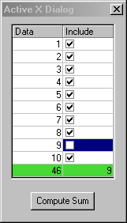

Programmatically Accessing a Dialog Builder Dialog with an ActiveX Control
To learn how to launch and manipulate a Dialog Builder dialog with an ActiveX control first review the section Origin C Dialog Builder Examples and then follow the steps below. The steps below use Origin and Code Builder to launch and manipulate an example dialog with an ActiveX control.
- Download this zip file, extract it.
- Start Origin and open Code Builder by clicking the Code Builder button on Origin's Standard toolbar.
- Select the File:Open menu item in Code Builder. Check the Add to Workspace checkbox at the bottom of the Open dialog box and then browse to and open the sample files ActiveXDLG.c, ActiveXDlgCls.h, and ActiveXDLG.h in the \Dialog Builder\ActiveXDLG subfolder of the unzipped folder above. The source files are also added to the Code Builder workspace. Study the code as desired to gain an understanding of how to launch and manipulate a Dialog Builder dialog containing an ActiveX control.
- In the header file ActiveXDlgCls.h locate the line of code below.
m_objActiveX = GetItem( IDC_AXD_VSFLEXGRID ).GetActiveXControl();
The GetItem method of the Dialog class is chained together with the GetActiveXControl method of the Control class to attach the class data member m_objActiveX to a VSFlexGrid ActiveX control from ComponentOne Software. The ActiveX control has the resource ID IDC_AXD_VSFLEXGRID.
- Select the Tools:Rebuild All menu item in Code Builder to compile and link all the files in the Origin C workspace.
- Activate Origin and open the Script Window by selecting the Origin Window:Script Window menu item. Type LaunchActiveXDLG() into the Script Window and press the Enter key. The function executes and launches the Active X Dialog example dialog containing the VSFlexGrid ActiveX control.

For additional example dialogs containing ActiveX controls see the source files contained in the \Dialog Builder\ActiveXNI subfolder of the unzipped folder above.